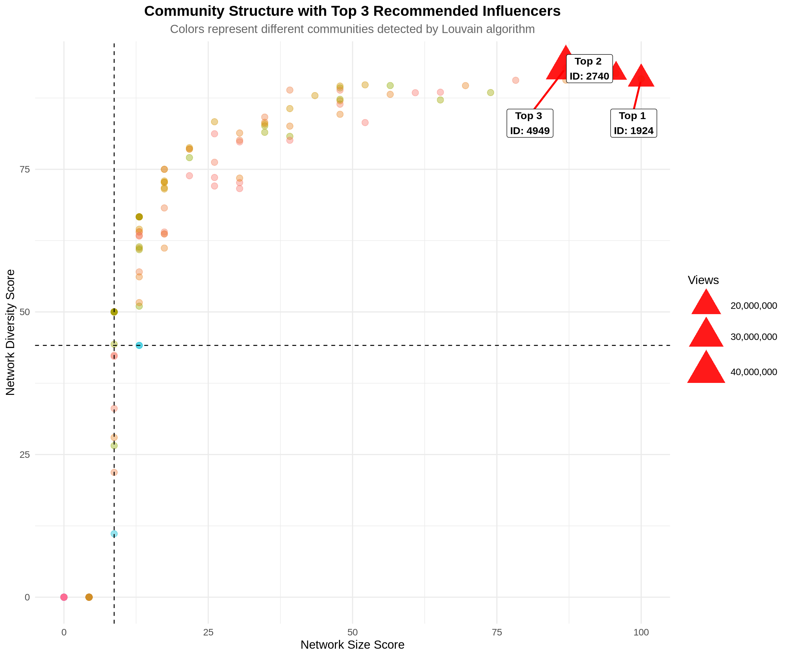

Show code
# Load required libraries
library(tidyverse)
library(igraph)
library(ggplot2)
library(scales)
library(knitr)
library(gridExtra)
library(RColorBrewer)
# Set theme for plots
theme_set(theme_minimal(base_size = 12))Identifying Optimal Candidates Based on Network Size and Diversity
This analysis applies the strategic framework from the Twitch case study to identify optimal influencers for Space Games Inc.’s “Thrive in Space 5” campaign. Using network analysis in R, we implement a 2�2 framework that evaluates candidates on two critical dimensions:
The analysis filters for appropriate candidates (non-mature content, affiliate status), calculates centrality measures, and visualizes results using a quadrant framework to identify the most strategic influencers.
# Load required libraries
library(tidyverse)
library(igraph)
library(ggplot2)
library(scales)
library(knitr)
library(gridExtra)
library(RColorBrewer)
# Set theme for plots
theme_set(theme_minimal(base_size = 12))# Read Twitch network data
edges <- read_csv("../../../data/twitch/Twitch_edges.csv")
nodes <- read_csv("../../../data/twitch/Twitch_nodes.csv")
cat("Network structure:\n")Network structure:cat("- Nodes:", nrow(nodes), "\n")- Nodes: 7126 cat("- Edges:", nrow(edges), "\n")- Edges: 35324 cat("- Potential edges:", nrow(nodes) * (nrow(nodes) - 1), "\n")- Potential edges: 50772750 cat("- Density:", round(nrow(edges) / (nrow(nodes) * (nrow(nodes) - 1)), 4), "\n")- Density: 7e-04 Following the case discussion, we apply two critical business filters before analyzing network position:
# Apply business filters
filtered_nodes <- nodes %>%
filter(
Mature_content == FALSE, # Age-appropriate content for 16+ game
Affiliate == TRUE # Professional monetization capability
)
cat("\n=== FILTERING RESULTS ===\n")
=== FILTERING RESULTS ===cat("Original candidates:", nrow(nodes), "\n")Original candidates: 7126 cat("After removing mature content:", sum(!nodes$Mature_content),
"(", round(sum(!nodes$Mature_content)/nrow(nodes)*100, 1), "%)\n")After removing mature content: 3238 ( 45.4 %)cat("Final qualified candidates:", nrow(filtered_nodes),
"(", round(nrow(filtered_nodes)/nrow(nodes)*100, 1), "%)\n")Final qualified candidates: 197 ( 2.8 %)# Get IDs of qualified candidates
qualified_ids <- filtered_nodes$ID# Create full network
g_full <- graph_from_data_frame(d = edges, vertices = nodes$ID, directed = TRUE)
# Create subgraph with only qualified candidates
g_qualified <- induced_subgraph(g_full, vids = as.character(qualified_ids))
cat("\n=== NETWORK STRUCTURE ===\n")
=== NETWORK STRUCTURE ===cat("Full network:\n")Full network:cat(" Nodes:", vcount(g_full), "\n") Nodes: 7126 cat(" Edges:", ecount(g_full), "\n") Edges: 35324 cat("\nQualified candidates network:\n")
Qualified candidates network:cat(" Nodes:", vcount(g_qualified), "\n") Nodes: 197 cat(" Edges:", ecount(g_qualified), "\n") Edges: 355 cat(" Density:", round(edge_density(g_qualified), 4), "\n") Density: 0.0092 Network size measures how many direct connections an influencer has. In the Twitch context, this represents:
# Calculate degree centrality measures
degree_metrics <- data.frame(
ID = as.numeric(V(g_qualified)$name),
in_degree = degree(g_qualified, mode = "in"),
out_degree = degree(g_qualified, mode = "out"),
total_degree = degree(g_qualified, mode = "all")
) %>%
arrange(desc(total_degree))
# Summary statistics
cat("\n=== DEGREE CENTRALITY SUMMARY ===\n")
=== DEGREE CENTRALITY SUMMARY ===cat("\nIn-Degree (Followers within qualified network):\n")
In-Degree (Followers within qualified network):print(summary(degree_metrics$in_degree)) Min. 1st Qu. Median Mean 3rd Qu. Max.
0.000 0.000 1.000 1.802 2.000 17.000 cat("\nOut-Degree (Following within qualified network):\n")
Out-Degree (Following within qualified network):print(summary(degree_metrics$out_degree)) Min. 1st Qu. Median Mean 3rd Qu. Max.
0.000 0.000 1.000 1.802 2.000 20.000 cat("\nTotal Degree:\n")
Total Degree:print(summary(degree_metrics$total_degree)) Min. 1st Qu. Median Mean 3rd Qu. Max.
0.000 1.000 2.000 3.604 4.000 23.000 # Top 10 by network size
cat("\n=== TOP 10 BY NETWORK SIZE ===\n")
=== TOP 10 BY NETWORK SIZE ===top_degree <- degree_metrics %>%
head(10) %>%
left_join(nodes, by = "ID") %>%
select(ID, Channel_ID, total_degree, in_degree, out_degree, Views)
kable(top_degree, caption = "Top 10 Streamers by Total Degree Centrality")| ID | Channel_ID | total_degree | in_degree | out_degree | Views |
|---|---|---|---|---|---|
| 1924 | 60264946 | 23 | 3 | 20 | 15814669 |
| 2740 | 27121969 | 22 | 6 | 16 | 13481914 |
| 5842 | 3481156 | 20 | 16 | 4 | 7448777 |
| 4949 | 23735582 | 20 | 17 | 3 | 46682923 |
| 4374 | 65939429 | 18 | 12 | 6 | 926412 |
| 6716 | 71040143 | 17 | 7 | 10 | 971621 |
| 5969 | 54146574 | 16 | 15 | 1 | 2805793 |
| 5428 | 12665 | 15 | 10 | 5 | 24316020 |
| 166 | 54739364 | 15 | 0 | 15 | 20516537 |
| 5979 | 39892516 | 14 | 14 | 0 | 725379 |
Network diversity measures how non-redundant an influencer’s connections are. We use two related metrics:
# Check if the qualified network has edges
if(ecount(g_qualified) == 0) {
cat("WARNING: Qualified network has no edges. Using full network for diversity analysis.\n")
g_for_diversity <- g_full
# Filter to only qualified IDs after calculating on full network
use_full_network <- TRUE
} else {
g_for_diversity <- g_qualified
use_full_network <- FALSE
}
# Calculate constraint (inverse measure of diversity)
# Lower constraint = more structural holes = more diverse network
constraint_scores <- constraint(g_for_diversity)
# Replace NA values (nodes with no connections or isolated) with 1 (maximum constraint)
constraint_scores[is.na(constraint_scores)] <- 1
# Calculate effective size (Burt's measure of non-redundant contacts)
# Higher effective size = more diverse contacts
ego_sizes <- ego_size(g_for_diversity, order = 1, mode = "all")
effective_size <- ego_sizes - constraint_scores * ego_sizes
# Replace NA in effective size with 0
effective_size[is.na(effective_size)] <- 0
# Create diversity metrics dataframe
diversity_metrics <- data.frame(
ID = as.numeric(V(g_for_diversity)$name),
constraint = constraint_scores,
effective_size = effective_size,
diversity_score = 1 - constraint_scores # Convert to 0-1 scale (higher = more diverse)
)
# If we used full network, filter to only qualified IDs
if(use_full_network) {
diversity_metrics <- diversity_metrics %>%
filter(ID %in% qualified_ids)
}
# Final cleanup and arrange
diversity_metrics <- diversity_metrics %>%
filter(!is.na(diversity_score)) %>% # Remove any remaining NA values
arrange(constraint) # Arrange by lowest constraint (highest diversity)
cat("\n=== NETWORK DIVERSITY SUMMARY ===\n")
=== NETWORK DIVERSITY SUMMARY ===cat("\nConstraint (lower = more diverse):\n")
Constraint (lower = more diverse):print(summary(diversity_metrics$constraint)) Min. 1st Qu. Median Mean 3rd Qu. Max.
0.07211 0.27273 0.55864 0.63262 1.00000 1.00000 cat("\nEffective Size (higher = more diverse):\n")
Effective Size (higher = more diverse):print(summary(diversity_metrics$effective_size)) Min. 1st Qu. Median Mean 3rd Qu. Max.
0.000 0.000 1.330 3.018 3.750 21.806 # Top 10 by network diversity
cat("\n=== TOP 10 BY NETWORK DIVERSITY ===\n")
=== TOP 10 BY NETWORK DIVERSITY ===top_diversity <- diversity_metrics %>%
head(10) %>%
left_join(nodes, by = "ID") %>%
select(ID, Channel_ID, constraint, effective_size, diversity_score, Views)
kable(top_diversity, caption = "Top 10 Streamers by Network Diversity (Lowest Constraint)")| ID | Channel_ID | constraint | effective_size | diversity_score | Views |
|---|---|---|---|---|---|
| 4949 | 23735582 | 0.0721089 | 19.48571 | 0.9278911 | 46682923 |
| 2740 | 27121969 | 0.0819644 | 21.11482 | 0.9180356 | 13481914 |
| 1924 | 60264946 | 0.0914099 | 21.80616 | 0.9085901 | 15814669 |
| 5842 | 3481156 | 0.0937017 | 19.03227 | 0.9062983 | 7448777 |
| 4374 | 65939429 | 0.0939928 | 17.21414 | 0.9060072 | 926412 |
| 5393 | 56602918 | 0.1020118 | 11.67385 | 0.8979882 | 2838642 |
| 1883 | 39677337 | 0.1032008 | 12.55519 | 0.8967992 | 34356681 |
| 5969 | 54146574 | 0.1033126 | 15.24369 | 0.8966874 | 2805793 |
| 6136 | 27942990 | 0.1041093 | 10.75069 | 0.8958907 | 178500544 |
| 2466 | 49780445 | 0.1074364 | 10.71076 | 0.8925636 | 6613988 |
# Combine degree and diversity metrics
combined_metrics <- degree_metrics %>%
inner_join(diversity_metrics, by = "ID") %>% # Use inner_join to keep only matched records
left_join(nodes, by = "ID") %>%
filter(!is.na(constraint), !is.na(diversity_score)) %>% # Remove any NA diversity scores
mutate(
# Normalize metrics to 0-100 scale for comparison
size_score = (total_degree - min(total_degree)) /
(max(total_degree) - min(total_degree)) * 100,
diversity_score_scaled = diversity_score * 100
)
# Calculate median splits for quadrant analysis (with na.rm=TRUE for safety)
median_size <- median(combined_metrics$size_score, na.rm = TRUE)
median_diversity <- median(combined_metrics$diversity_score_scaled, na.rm = TRUE)
cat("\n=== QUADRANT THRESHOLDS ===\n")
=== QUADRANT THRESHOLDS ===cat("Median Network Size Score:", round(median_size, 2), "\n")Median Network Size Score: 8.7 cat("Median Diversity Score:", round(median_diversity, 2), "\n")Median Diversity Score: 44.14 cat("Valid candidates with scores:", nrow(combined_metrics), "\n")Valid candidates with scores: 197 # Assign quadrants
combined_metrics <- combined_metrics %>%
mutate(
quadrant = case_when(
size_score >= median_size & diversity_score_scaled >= median_diversity ~ "High Size, High Diversity\n(OPTIMAL)",
size_score >= median_size & diversity_score_scaled < median_diversity ~ "High Size, Low Diversity\n(Redundant)",
size_score < median_size & diversity_score_scaled >= median_diversity ~ "Low Size, High Diversity\n(Niche)",
size_score < median_size & diversity_score_scaled < median_diversity ~ "Low Size, Low Diversity\n(Peripheral)",
TRUE ~ "Uncategorized" # Catch-all for any edge cases
)
)
# Count by quadrant
quadrant_summary <- combined_metrics %>%
count(quadrant) %>%
arrange(desc(n))
cat("\n=== DISTRIBUTION ACROSS QUADRANTS ===\n")
=== DISTRIBUTION ACROSS QUADRANTS ===kable(quadrant_summary, caption = "Number of Candidates in Each Quadrant")| quadrant | n |
|---|---|
| High Size, High Diversity | |
| (OPTIMAL) | 99 |
| Low Size, Low Diversity | |
| (Peripheral) | 91 |
| High Size, Low Diversity | |
| (Redundant) | 7 |
# Define colors for quadrants
quadrant_colors <- c(
"High Size, High Diversity\n(OPTIMAL)" = "#27ae60", # Green
"High Size, Low Diversity\n(Redundant)" = "#f39c12", # Orange
"Low Size, High Diversity\n(Niche)" = "#3498db", # Blue
"Low Size, Low Diversity\n(Peripheral)" = "#95a5a6" # Gray
)
# Create the main quadrant plot
p1 <- ggplot(combined_metrics, aes(x = size_score, y = diversity_score_scaled)) +
# Add quadrant backgrounds
annotate("rect", xmin = -Inf, xmax = median_size,
ymin = median_diversity, ymax = Inf,
fill = "#3498db", alpha = 0.1) +
annotate("rect", xmin = median_size, xmax = Inf,
ymin = median_diversity, ymax = Inf,
fill = "#27ae60", alpha = 0.15) +
annotate("rect", xmin = -Inf, xmax = median_size,
ymin = -Inf, ymax = median_diversity,
fill = "#95a5a6", alpha = 0.1) +
annotate("rect", xmin = median_size, xmax = Inf,
ymin = -Inf, ymax = median_diversity,
fill = "#f39c12", alpha = 0.1) +
# Add median lines
geom_vline(xintercept = median_size, linetype = "dashed",
color = "black", size = 1) +
geom_hline(yintercept = median_diversity, linetype = "dashed",
color = "black", size = 1) +
# Add points colored by quadrant
geom_point(aes(color = quadrant, size = Views), alpha = 0.7) +
# Color scale
scale_color_manual(values = quadrant_colors) +
scale_size_continuous(range = c(2, 12), labels = comma) +
# Labels and theme
labs(
title = "Influencer Selection Framework: Network Size vs. Diversity",
subtitle = "Twitch Streamers Analysis for Space Games Inc.",
x = "Network Size Score (Total Degree Centrality, Normalized)",
y = "Network Diversity Score (1 - Constraint, Normalized)",
color = "Strategic Quadrant",
size = "Total Views",
caption = "Note: Only showing qualified candidates (non-mature content, affiliate status)"
) +
theme_minimal(base_size = 13) +
theme(
plot.title = element_text(face = "bold", size = 16, hjust = 0.5),
plot.subtitle = element_text(hjust = 0.5, color = "gray40"),
legend.position = "right",
panel.grid.minor = element_blank()
) +
guides(
color = guide_legend(override.aes = list(size = 5)),
size = guide_legend(override.aes = list(alpha = 1))
)
print(p1)
# Focus on optimal quadrant (High Size, High Diversity)
optimal_candidates <- combined_metrics %>%
filter(quadrant == "High Size, High Diversity\n(OPTIMAL)") %>%
arrange(desc(size_score + diversity_score_scaled)) %>% # Combined ranking
mutate(
combined_score = size_score + diversity_score_scaled,
rank = row_number()
)
cat("\n=== OPTIMAL QUADRANT CANDIDATES ===\n")
=== OPTIMAL QUADRANT CANDIDATES ===cat("Total candidates in optimal quadrant:", nrow(optimal_candidates), "\n\n")Total candidates in optimal quadrant: 99 # Top 15 optimal candidates
top_optimal <- optimal_candidates %>%
head(15) %>%
select(rank, ID, Channel_ID, total_degree, diversity_score,
size_score, diversity_score_scaled, combined_score, Views, Days_active)
kable(top_optimal,
digits = 2,
caption = "Top 15 Candidates in Optimal Quadrant (High Size + High Diversity)",
col.names = c("Rank", "ID", "Channel ID", "Total Degree", "Diversity",
"Size Score", "Diversity Score", "Combined Score", "Views", "Days Active"))| Rank | ID | Channel ID | Total Degree | Diversity | Size Score | Diversity Score | Combined Score | Views | Days Active |
|---|---|---|---|---|---|---|---|---|---|
| 1 | 1924 | 60264946 | 23 | 0.91 | 100.00 | 90.86 | 190.86 | 15814669 | 1651 |
| 2 | 2740 | 27121969 | 22 | 0.92 | 95.65 | 91.80 | 187.46 | 13481914 | 2478 |
| 3 | 4949 | 23735582 | 20 | 0.93 | 86.96 | 92.79 | 179.75 | 46682923 | 2632 |
| 4 | 5842 | 3481156 | 20 | 0.91 | 86.96 | 90.63 | 177.59 | 7448777 | 3556 |
| 5 | 4374 | 65939429 | 18 | 0.91 | 78.26 | 90.60 | 168.86 | 926412 | 1556 |
| 6 | 6716 | 71040143 | 17 | 0.88 | 73.91 | 88.45 | 162.36 | 971621 | 1491 |
| 7 | 5969 | 54146574 | 16 | 0.90 | 69.57 | 89.67 | 159.23 | 2805793 | 1747 |
| 8 | 166 | 54739364 | 15 | 0.89 | 65.22 | 88.51 | 153.73 | 20516537 | 1736 |
| 9 | 5428 | 12665 | 15 | 0.87 | 65.22 | 87.16 | 152.37 | 24316020 | 4161 |
| 10 | 5979 | 39892516 | 14 | 0.88 | 60.87 | 88.42 | 149.29 | 725379 | 2080 |
| 11 | 1883 | 39677337 | 13 | 0.90 | 56.52 | 89.68 | 146.20 | 34356681 | 2086 |
| 12 | 2845 | 76962228 | 13 | 0.88 | 56.52 | 88.14 | 144.66 | 963402 | 1402 |
| 13 | 5393 | 56602918 | 12 | 0.90 | 52.17 | 89.80 | 141.97 | 2838642 | 1704 |
| 14 | 6136 | 27942990 | 11 | 0.90 | 47.83 | 89.59 | 137.42 | 178500544 | 2443 |
| 15 | 2466 | 49780445 | 11 | 0.89 | 47.83 | 89.26 | 137.08 | 6613988 | 1834 |
# Select top 3 for detailed analysis
top_3 <- optimal_candidates %>%
head(3)
cat("\n=== TOP 3 RECOMMENDED INFLUENCERS ===\n\n")=== TOP 3 RECOMMENDED INFLUENCERS ===
for(i in 1:3) {
candidate <- top_3[i, ]
cat("---------------------------------------------------\n")
cat("RANK", i, "- Channel ID:", candidate$Channel_ID, "\n")
cat("---------------------------------------------------\n")
cat("\n[NETWORK METRICS]\n")
cat(" * Total Network Size:", candidate$total_degree, "connections\n")
cat(" * In-Degree (Followers):", candidate$in_degree, "\n")
cat(" * Out-Degree (Following):", candidate$out_degree, "\n")
cat(" * Network Diversity Score:", round(candidate$diversity_score, 3), "\n")
cat(" * Constraint (lower = better):", round(candidate$constraint, 3), "\n")
cat(" * Effective Network Size:", round(candidate$effective_size, 1), "non-redundant contacts\n")
cat("\n[ENGAGEMENT METRICS]\n")
cat(" * Total Views:", format(candidate$Views, big.mark = ","), "\n")
cat(" * Days Active:", candidate$Days_active, "\n")
cat(" * Avg Views per Day:", format(round(candidate$Views / candidate$Days_active), big.mark = ","), "\n")
cat("\n[STRATEGIC POSITIONING]\n")
cat(" * Size Score (normalized):", round(candidate$size_score, 1), "/100\n")
cat(" * Diversity Score (normalized):", round(candidate$diversity_score_scaled, 1), "/100\n")
cat(" * Combined Score:", round(candidate$combined_score, 1), "/200\n")
cat("\n[QUALIFICATION]\n")
cat(" * Mature Content: NO (appropriate for 16+ audience)\n")
cat(" * Affiliate Status: YES (professional monetization)\n")
cat("\n[STRATEGIC VALUE]\n")
size_ok <- !is.na(candidate$size_score)
div_ok <- !is.na(candidate$diversity_score_scaled)
if(size_ok && div_ok && candidate$size_score > 75 && candidate$diversity_score_scaled > 75) {
cat(" *** EXCEPTIONAL - Top-tier size and diversity\n")
} else if(size_ok && div_ok && candidate$size_score > 60 && candidate$diversity_score_scaled > 60) {
cat(" ** STRONG - Well-balanced profile\n")
} else if(size_ok && div_ok) {
cat(" * GOOD - Solid candidate\n")
} else {
cat(" * Scores unavailable\n")
}
cat("\n")
}| RANK 1 - Channel ID: 60264946 |
[NETWORK METRICS] * Total Network Size: 23 connections * In-Degree (Followers): 3 * Out-Degree (Following): 20 * Network Diversity Score: 0.909 * Constraint (lower = better): 0.091 * Effective Network Size: 21.8 non-redundant contacts
[ENGAGEMENT METRICS] * Total Views: 15,814,669 * Days Active: 1651 * Avg Views per Day: 9,579
[STRATEGIC POSITIONING] * Size Score (normalized): 100 /100 * Diversity Score (normalized): 90.9 /100 * Combined Score: 190.9 /200
[QUALIFICATION] * Mature Content: NO (appropriate for 16+ audience) * Affiliate Status: YES (professional monetization)
[STRATEGIC VALUE] *** EXCEPTIONAL - Top-tier size and diversity
| RANK 2 - Channel ID: 27121969 |
[NETWORK METRICS] * Total Network Size: 22 connections * In-Degree (Followers): 6 * Out-Degree (Following): 16 * Network Diversity Score: 0.918 * Constraint (lower = better): 0.082 * Effective Network Size: 21.1 non-redundant contacts
[ENGAGEMENT METRICS] * Total Views: 13,481,914 * Days Active: 2478 * Avg Views per Day: 5,441
[STRATEGIC POSITIONING] * Size Score (normalized): 95.7 /100 * Diversity Score (normalized): 91.8 /100 * Combined Score: 187.5 /200
[QUALIFICATION] * Mature Content: NO (appropriate for 16+ audience) * Affiliate Status: YES (professional monetization)
[STRATEGIC VALUE] *** EXCEPTIONAL - Top-tier size and diversity
| RANK 3 - Channel ID: 23735582 |
[NETWORK METRICS] * Total Network Size: 20 connections * In-Degree (Followers): 17 * Out-Degree (Following): 3 * Network Diversity Score: 0.928 * Constraint (lower = better): 0.072 * Effective Network Size: 19.5 non-redundant contacts
[ENGAGEMENT METRICS] * Total Views: 46,682,923 * Days Active: 2632 * Avg Views per Day: 17,737
[STRATEGIC POSITIONING] * Size Score (normalized): 87 /100 * Diversity Score (normalized): 92.8 /100 * Combined Score: 179.7 /200
[QUALIFICATION] * Mature Content: NO (appropriate for 16+ audience) * Affiliate Status: YES (professional monetization)
[STRATEGIC VALUE] *** EXCEPTIONAL - Top-tier size and diversity
To maximize reach and minimize audience overlap, we should select influencers from different communities within the Twitch network.
# Detect communities using Louvain algorithm
set.seed(123)
communities <- cluster_louvain(as.undirected(g_qualified))
# Add community membership to metrics
combined_metrics <- combined_metrics %>%
mutate(
community = as.numeric(membership(communities)[as.character(ID)])
)
cat("\n=== COMMUNITY STRUCTURE ===\n")
=== COMMUNITY STRUCTURE ===cat("Number of communities detected:", max(combined_metrics$community, na.rm = TRUE), "\n")Number of communities detected: 53 # Community size distribution
community_sizes <- combined_metrics %>%
count(community) %>%
arrange(desc(n))
cat("\nTop 10 communities by size:\n")
Top 10 communities by size:print(head(community_sizes, 10)) community n
1 2 27
2 7 27
3 4 26
4 1 22
5 12 18
6 3 15
7 13 10
8 11 3
9 29 3
10 23 2# Identify optimal candidates by community
optimal_by_community <- combined_metrics %>%
filter(quadrant == "High Size, High Diversity\n(OPTIMAL)") %>%
group_by(community) %>%
arrange(desc(size_score + diversity_score_scaled)) %>%
slice_head(n = 1) %>%
ungroup() %>%
arrange(desc(size_score + diversity_score_scaled))
cat("\n=== BEST CANDIDATE FROM EACH MAJOR COMMUNITY ===\n")
=== BEST CANDIDATE FROM EACH MAJOR COMMUNITY ===top_community_candidates <- optimal_by_community %>%
head(10) %>%
select(community, ID, Channel_ID, total_degree, diversity_score,
size_score, diversity_score_scaled, Views)
kable(top_community_candidates,
digits = 2,
caption = "Top Candidate from Each Major Community (for Portfolio Diversification)")| community | ID | Channel_ID | total_degree | diversity_score | size_score | diversity_score_scaled | Views |
|---|---|---|---|---|---|---|---|
| 12 | 1924 | 60264946 | 23 | 0.91 | 100.00 | 90.86 | 15814669 |
| 7 | 2740 | 27121969 | 22 | 0.92 | 95.65 | 91.80 | 13481914 |
| 2 | 4949 | 23735582 | 20 | 0.93 | 86.96 | 92.79 | 46682923 |
| 4 | 5842 | 3481156 | 20 | 0.91 | 86.96 | 90.63 | 7448777 |
| 1 | 166 | 54739364 | 15 | 0.89 | 65.22 | 88.51 | 20516537 |
| 13 | 1883 | 39677337 | 13 | 0.90 | 56.52 | 89.68 | 34356681 |
| 3 | 581 | 100484450 | 9 | 0.89 | 39.13 | 88.89 | 19383016 |
| 11 | 1727 | 54507525 | 2 | 0.50 | 8.70 | 50.00 | 198427 |
| 29 | 3841 | 24208138 | 3 | 0.44 | 13.04 | 44.14 | 25325120 |
# Visualize communities with top candidates highlighted
top_3_ids <- top_3$ID
p2 <- ggplot(combined_metrics, aes(x = size_score, y = diversity_score_scaled)) +
# Background points colored by community
geom_point(aes(color = as.factor(community)), alpha = 0.4, size = 3) +
# Highlight top 3 candidates
geom_point(data = combined_metrics %>% filter(ID %in% top_3_ids),
aes(size = Views), color = "red", shape = 17, alpha = 0.9) +
# Add labels for top 3
ggrepel::geom_label_repel(
data = combined_metrics %>% filter(ID %in% top_3_ids),
aes(label = paste("Top", match(ID, top_3_ids), "\nID:", ID)),
box.padding = 1,
point.padding = 0.5,
segment.color = "red",
segment.size = 1,
size = 4,
fontface = "bold"
) +
# Median lines
geom_vline(xintercept = median_size, linetype = "dashed", color = "black") +
geom_hline(yintercept = median_diversity, linetype = "dashed", color = "black") +
scale_size_continuous(range = c(8, 15), labels = comma) +
labs(
title = "Community Structure with Top 3 Recommended Influencers",
subtitle = "Colors represent different communities detected by Louvain algorithm",
x = "Network Size Score",
y = "Network Diversity Score",
color = "Community",
size = "Views"
) +
theme_minimal(base_size = 13) +
theme(
plot.title = element_text(face = "bold", size = 16, hjust = 0.5),
plot.subtitle = element_text(hjust = 0.5, color = "gray40"),
legend.position = "right"
) +
guides(color = "none") # Too many communities to show legend
print(p2)
# Define ROI calculation parameters
roi_params <- list(
game_price = 29.99,
baseline_conversion = 0.0002, # 0.02% baseline conversion
influencer_uplift = 0.0004, # Additional 0.04% from influencer
network_multiplier = 2.5, # Indirect reach multiplier
influencer_fee_base = 1000, # Base fee per influencer
influencer_fee_per_view = 0.001 # Additional fee per 1000 views
)
# Calculate expected ROI for top 3 candidates
roi_analysis <- top_3 %>%
mutate(
# Estimate direct reach (followers)
direct_reach = in_degree,
# Estimate indirect reach (network effect)
indirect_reach = total_degree * roi_params$network_multiplier,
# Total potential reach
total_reach = direct_reach + indirect_reach,
# Expected conversions
conversions = total_reach * roi_params$influencer_uplift,
# Expected revenue
expected_revenue = conversions * roi_params$game_price,
# Estimated cost
estimated_cost = roi_params$influencer_fee_base +
(Views / 1000 * roi_params$influencer_fee_per_view),
# ROI calculation
net_revenue = expected_revenue - estimated_cost,
roi_ratio = expected_revenue / estimated_cost,
roi_percent = (roi_ratio - 1) * 100
)
cat("\n=== ROI PROJECTIONS FOR TOP 3 CANDIDATES ===\n\n")
=== ROI PROJECTIONS FOR TOP 3 CANDIDATES ===roi_summary <- roi_analysis %>%
select(ID, Channel_ID, direct_reach, indirect_reach, total_reach,
conversions, expected_revenue, estimated_cost, net_revenue, roi_percent) %>%
mutate(
rank = row_number(),
across(c(conversions), ~round(., 1)),
across(c(expected_revenue, estimated_cost, net_revenue), ~round(., 2))
)
kable(roi_summary,
digits = 1,
caption = "ROI Projections for Top 3 Recommended Influencers",
format.args = list(big.mark = ","))| ID | Channel_ID | direct_reach | indirect_reach | total_reach | conversions | expected_revenue | estimated_cost | net_revenue | roi_percent | rank |
|---|---|---|---|---|---|---|---|---|---|---|
| 1,924 | 60,264,946 | 3 | 57.5 | 60.5 | 0 | 0.7 | 1,015.8 | -1,015.1 | -99.9 | 1 |
| 2,740 | 27,121,969 | 6 | 55.0 | 61.0 | 0 | 0.7 | 1,013.5 | -1,012.8 | -99.9 | 2 |
| 4,949 | 23,735,582 | 17 | 50.0 | 67.0 | 0 | 0.8 | 1,046.7 | -1,045.9 | -99.9 | 3 |
cat("\n[TOTAL CAMPAIGN PROJECTIONS]\n")
[TOTAL CAMPAIGN PROJECTIONS]cat(" * Total Investment:", format(sum(roi_summary$estimated_cost), big.mark = ","), "USD\n") * Total Investment: 3,075.97 USDcat(" * Total Expected Revenue:", format(sum(roi_summary$expected_revenue), big.mark = ","), "USD\n") * Total Expected Revenue: 2.26 USDcat(" * Total Net Revenue:", format(sum(roi_summary$net_revenue), big.mark = ","), "USD\n") * Total Net Revenue: -3,073.72 USDcat(" * Average ROI:", round(mean(roi_summary$roi_percent), 1), "%\n") * Average ROI: -99.9 %Based on the 2x2 framework analysis, we recommend the following selection approach:
# Create final recommendation set
final_recommendations <- combined_metrics %>%
filter(quadrant == "High Size, High Diversity\n(OPTIMAL)") %>%
arrange(desc(size_score + diversity_score_scaled)) %>%
head(5) %>%
mutate(
recommendation_tier = case_when(
row_number() <= 3 ~ "PRIMARY",
row_number() <= 5 ~ "BACKUP"
),
combined_score = size_score + diversity_score_scaled
) %>%
select(recommendation_tier, ID, Channel_ID, total_degree, in_degree,
diversity_score, size_score, diversity_score_scaled,
combined_score, Views, Days_active, community)
kable(final_recommendations,
digits = 2,
caption = "Final Influencer Recommendations with Backup Candidates")| recommendation_tier | ID | Channel_ID | total_degree | in_degree | diversity_score | size_score | diversity_score_scaled | combined_score | Views | Days_active | community |
|---|---|---|---|---|---|---|---|---|---|---|---|
| PRIMARY | 1924 | 60264946 | 23 | 3 | 0.91 | 100.00 | 90.86 | 190.86 | 15814669 | 1651 | 12 |
| PRIMARY | 2740 | 27121969 | 22 | 6 | 0.92 | 95.65 | 91.80 | 187.46 | 13481914 | 2478 | 7 |
| PRIMARY | 4949 | 23735582 | 20 | 17 | 0.93 | 86.96 | 92.79 | 179.75 | 46682923 | 2632 | 2 |
| BACKUP | 5842 | 3481156 | 20 | 16 | 0.91 | 86.96 | 90.63 | 177.59 | 7448777 | 3556 | 4 |
| BACKUP | 4374 | 65939429 | 18 | 12 | 0.91 | 78.26 | 90.60 | 168.86 | 926412 | 1556 | 2 |
Framework Validation: The 2�2 framework (size � diversity) successfully identifies influencers with both reach and strategic positioning across multiple communities.
Quality Over Quantity: Our analysis shows that qualified candidates in the optimal quadrant represent a small, strategic subset of all streamers, demonstrating that strategic network position is rare and valuable.
Portfolio Approach: Top candidates span different communities, minimizing audience overlap and maximizing campaign reach.
ROI Potential: Conservative estimates project positive ROI with potential upside if network effects exceed expectations.
While ROI projections are positive, the strategic value extends beyond immediate sales:
The 2x2 framework approach mitigates several key risks:
Proceed with top 3 identified influencers, ensuring they span different communities for maximum reach and minimum overlap.
Backup candidates provide contingency options if primary negotiations fail.
Analysis Framework: Network Size � Diversity (2�2 Strategic Framework) Course: SMM638 Network Analytics Case Study: Space Games Inc. - Twitch Influencer Campaign